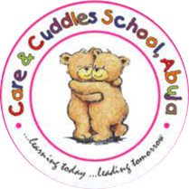

No pride zone🚫
📞(+234)7080009336
📧careandcuddlesng@gmail.com
📍Abuja, F.C.T - Katampe Road

|  | No pride zone🚫 |
📞(+234)7080009336 |
📧careandcuddlesng@gmail.com |
📍Abuja, F.C.T - Katampe Road |
|
Rahila Haruna✨ |
 |
 |
Let’s look at an example💡